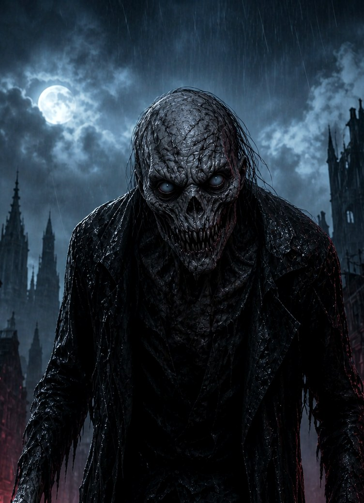

That was your 21st. Happy birthday, Mihrişah.
— the gargoyles
Your sky, Mihrişah
Touch anywhere. The gargoyles answer to you tonight.
And there are secrets hidden in this night. Find them.
← back

GOTCHA
consider this my fuck you.
have a good day, my lady 🖤
You found every secret.
Even the gargoyles are impressed.